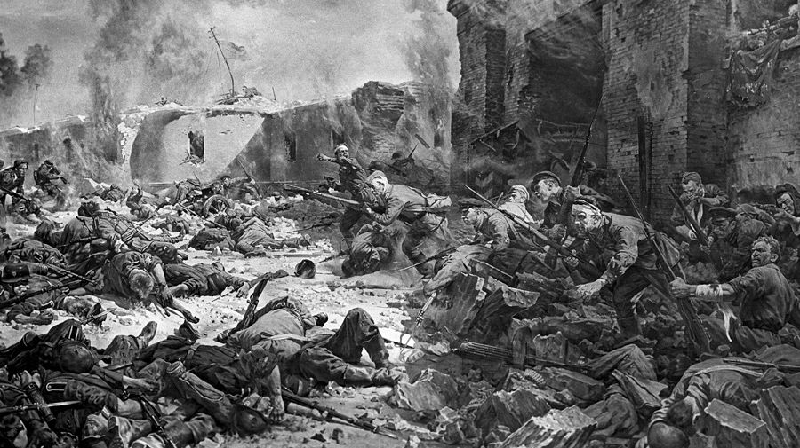
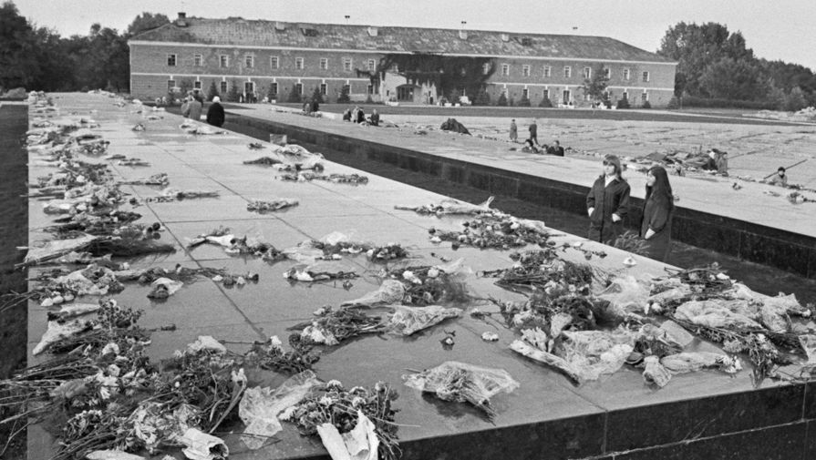
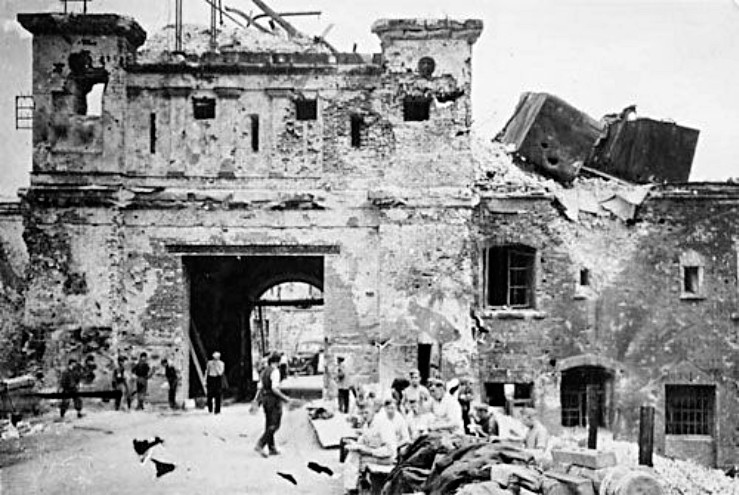
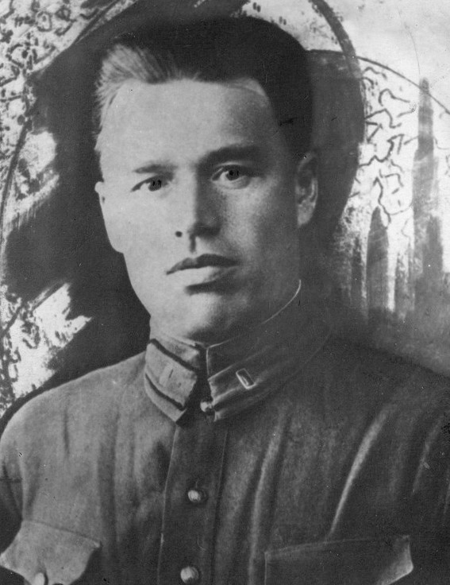

«Я умираю, но не сдаюсь!»
Как происходила оборона Брестской крепости
Вячеслав Авдеев
Репродукция картины/РИА «Новости»
Кривоногов П.А. «Защитники Брестской крепости», 1951 год
После Великой Отечественной войны, во время разбора завалов в Брестской крепости, на стене одного из казематов была обнаружена надпись, оставленная неизвестным солдатом Красной армии: «Я умираю, но не сдаюсь! Прощай, Родина! 20/VII-41». 75 лет спустя отдел науки «Газеты.Ru» вспоминает, как происходило одно из первых и самых трагичных сражений той войны.
В феврале 1942 года советские войска в ходе Елецкой наступательной операции разгромили четырехпехотную дивизию вермахта. При этом был захвачен архив штаба дивизии, в документах которого были найдены очень важные бумаги — «Боевое донесение о занятии Брест-Литовска». «Русские в Брест-Литовске боролись исключительно упорно и настойчиво. Они показали превосходную выучку пехоты и доказали замечательную волю к борьбе», — говорилось в донесении командира 45-й дивизии генерал-лейтенанта Шлипера. Именно тогда советские войска узнали правду о боях за Брестскую крепость.
Разгромить в кратчайшие сроки
Ранним утром 22 июня 1941 года после авиационной и артиллерийской подготовки немецкие войска перешли границу СССР. В тот же день войну СССР объявили Италия и Румыния, чуть позднее — Словакия, Венгрия и другие союзники Германии. Большая часть советских войск была застигнута врасплох, и поэтому в первый день была уничтожена значительная часть боеприпасов и военной техники. Также немцы получили полное господство в воздухе, выведя из строя более 1,2 тыс. самолетов Советской армии. Так началась Великая Отечественная война.
По плану нападения на СССР «Барбаросса», немецкое командование рассчитывало в кратчайшие сроки разгромить Советскую армию, не дав ей опомниться и организовать скоординированное сопротивление.
Брестская крепость. Цветы на мраморных плитах, под которыми захоронены останки воинов-героев, 1971 год
Надеждин Георгий/ТАСС
Одними из первых сражаться за Родину стали защитники Брестской крепости. Накануне войны в лагеря на учения из крепости было выведено около половины численности личного состава. Таким образом, в Брестской крепости утром 22 июня было около 9 тыс. бойцов и командиров, не считая персонала и пациентов госпиталя. Штурм крепости и города Бреста был поручен 45-й пехотной дивизии генерал-майора Фрица Шлипера во взаимодействии с частями соседних боевых соединений. Всего в штурме участвовало около 20 тыс. человек. Кроме того, немцы имели преимущество и в артиллерии. Помимо дивизионного артполка, орудия которого не могли пробить полутораметровые стены укреплений, в нападении участвовали две 600-миллиметровые самоходные мортиры «Карл», девять мортир калибра 211 мм и полк реактивных многоствольных минометов калибра 158,5 мм. На момент начала войны советские войска просто не располагали подобным вооружением. По плану немецкого командования, Брестская крепость должна была сдаться максимум за восемь часов, и не более того.
«Солдаты и офицеры прибывали поодиночке в полураздетом виде»
Атака началась 22 июня 1941 года в 4.15 по советскому декретному времени ударом артиллерии и реактивных минометов. Каждые четыре минуты огонь артиллерии переносился на 100 метров восточнее. Ураганный огонь застал гарнизон крепости врасплох. В результате обстрела были уничтожены склады, прервана связь и нанесен значительный урон гарнизону. Чуть позже начался штурм укреплений.
Поначалу из-за неожиданной атаки гарнизон крепости не смог оказать скоординированного сопротивления.
Как полковник Лизюков сорвал блицкриг
«В районы сосредоточения по тревоге из-за беспрерывного артиллерийского обстрела, внезапно начатого врагом в 4.00 22.6.41 г., части дивизии компактно выведены быть не могли. Солдаты и офицеры прибывали поодиночке в полураздетом виде. Из сосредоточившихся можно было создать максимум до двух батальонов. Первые бои осуществлялись под руководством командиров полков товарищей Дородных (84 сп), Матвеева (333 сп), Ковтуненко (125 сп).»
(Донесение заместителя командира по политической части той же 6-й стрелковой дивизии полкового комиссара М.Н. Бутина.)
К 4.00 штурмовой отряд, потеряв две трети личного состава, захватил два моста, соединяющие Западный и Южный острова с Цитаделью. Однако, пытаясь взять крепость как можно быстрее, немецкие войска втянулись в ближний бой с использованием стрелкового оружия, что привело к большим потерям с обеих сторон.
Бои носили встречный характер. Во время одной из успешных контратак у Тереспольских ворот была почти полностью уничтожена немецкая штурмовая группа. К 7.00 группе советских войск удалось вырваться из крепости, но множеству военнослужащих прорыв так и не удался. Именно они и продолжили дальнейшую оборону.
Отведя войска на внешние валы крепости, весь следующий день немецкая артиллерия проводила обстрел позиций защитников. В перерывах немецкие автомобили с громкоговорителями призывали гарнизон сдаться. Сдалось около 1,9 тыс. человек. Тем не менее остававшимся защитникам крепости удалось, выбив немцев из примыкающего к Брестским воротам участка кольцевой казармы, объединить два наиболее мощных из остававшихся в Цитадели очагов сопротивления. А еще осажденным удалось подбить три танка. Это были трофейные французские танки Somua S-35, вооруженные пушкой калибра 47 мм и обладавшие неплохим для начала войны бронированием.
Под покровом ночи осажденные попытались вырваться из окружения, но эта попытка провалилась. Почти все участники отрядов были пленены или уничтожены. 24 июня штаб 45-й дивизии доложил, что Цитадель взята и проводится зачистка отдельных очагов сопротивления. В 21.40 в штаб корпуса было доложено о взятии Брестской крепости. В этот день немецкие войска действительно овладели большей ее частью. Однако осталось еще несколько участков сопротивления, в том числе и так называемый «Восточный форт», который обороняло 600 бойцов под командованием майора Петра Михайловича Гаврилова. Он оказался единственным старшим офицером среди оборонявшихся. Большая часть командования была выведена из строя в первые минуты артобстрела.
«Пленный не мог даже сделать глотательного движения»
Несмотря на то что к 1 июля было разбито и рассеяно главное ядро защитников Цитадели, сопротивление продолжилось. Бои приобрели почти партизанский характер. Немцы блокировали участки сопротивления и пытались уничтожить защитников крепости. Советские бойцы, в свою очередь, пользуясь внезапностью и знанием укреплений, проводили вылазки и уничтожали захватчиков. Также продолжились попытки вырваться из окружения к партизанам, но сил для прорыва у защитников почти не оставалось.
Сопротивление таких одиночных разрозненных групп продолжалось практически весь июль. Последним защитником Брестской крепости считается майор Гаврилов, который, уже будучи тяжело раненным, попал в плен только 23 июля 1941 года. По свидетельству осматривавшего его врача, майор находился в крайней степени истощения:
«Москву и Ленинград не брать, блокировать и уничтожать»
«...пленный майор был в полной командирской форме, но вся одежда его превратилась в лохмотья, лицо было покрыто пороховой копотью и пылью и обросло бородой. Он был ранен, находился в бессознательном состоянии и выглядел истощенным до крайности. Это был в полном смысле слова скелет, обтянутый кожей.
До какой степени дошло истощение, можно было судить по тому, что пленный не мог даже сделать глотательного движения: у него не хватало на это сил, и врачам пришлось применить искусственное питание, чтобы спасти ему жизнь.
Но немецкие солдаты, которые взяли его в плен и привезли в лагерь, рассказали врачам, что этот человек, в чьем теле уже едва-едва теплилась жизнь, всего час тому назад, когда они застигли его в одном из казематов крепости, в одиночку принял с ними бой, бросал гранаты, стрелял из пистолета и убил и ранил нескольких гитлеровцев».
(Смирнов С.С. Брестская крепость)
Потери 45-й немецкой пехотной дивизии составили на 30 июня 1941 года 482 убитых, в том числе 48 офицеров, и более 1 тыс. раненых. Если учесть, что та же дивизия в 1939 году во время нападения на Польшу потеряла 158 убитыми и 360 ранеными, то потери были очень значительные. По донесению командира 45-й дивизии, немецкими войсками было взято в плен 25 офицеров, 2877 младших командиров и бойцов. 1877 советских военнослужащих погибло в крепости. К концу войны живых защитников Брестской крепости осталось около 400 человек.
Петр Гаврилов, советский офицер, майор, участник обороны Брестской крепости в 1941 году, Герой Советского Союза.
Майор Гаврилов был освобожден из немецкого плена в мае 1945 года. Однако до середины 1950-х годов он был исключен из Коммунистической партии за утрату партбилета во время нахождения в концентрационных лагерях. Орденами и медалями были награждены около 200 защитников Брестской крепости, но лишь двое получили звание Героя Советского Союза — майор Гаврилов и лейтенант Кижеватов (посмертно).